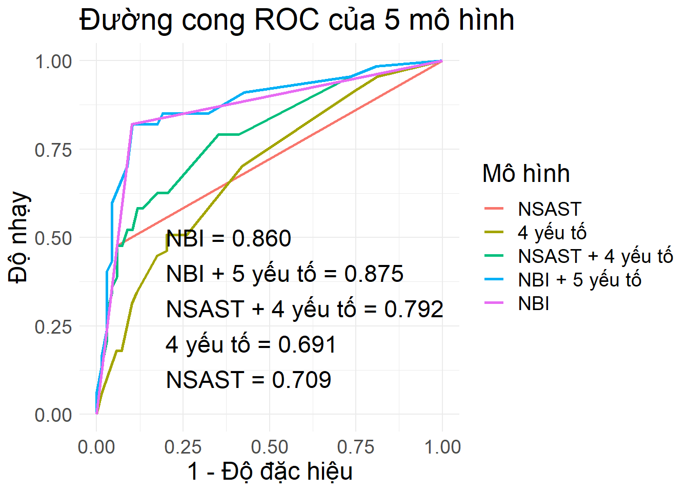
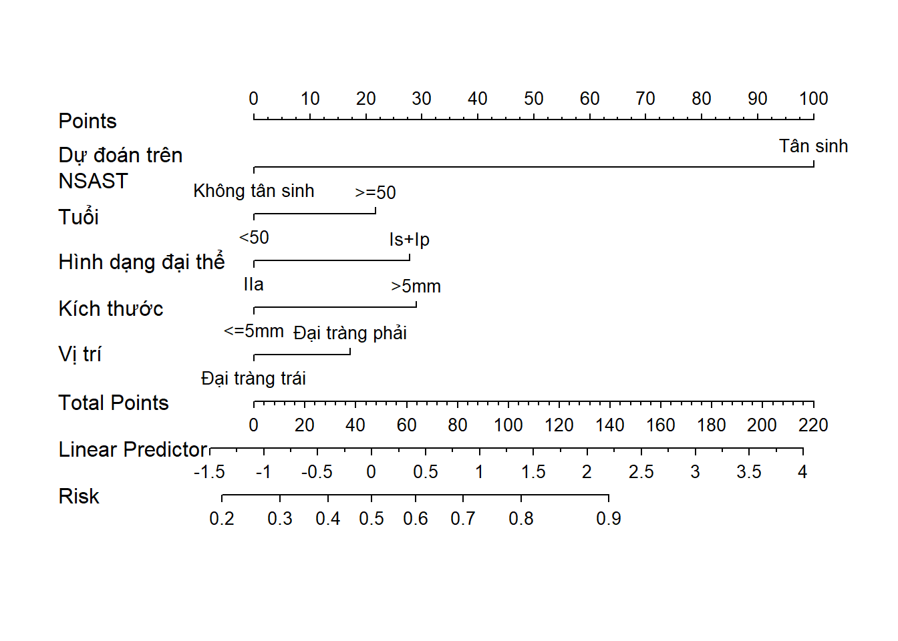
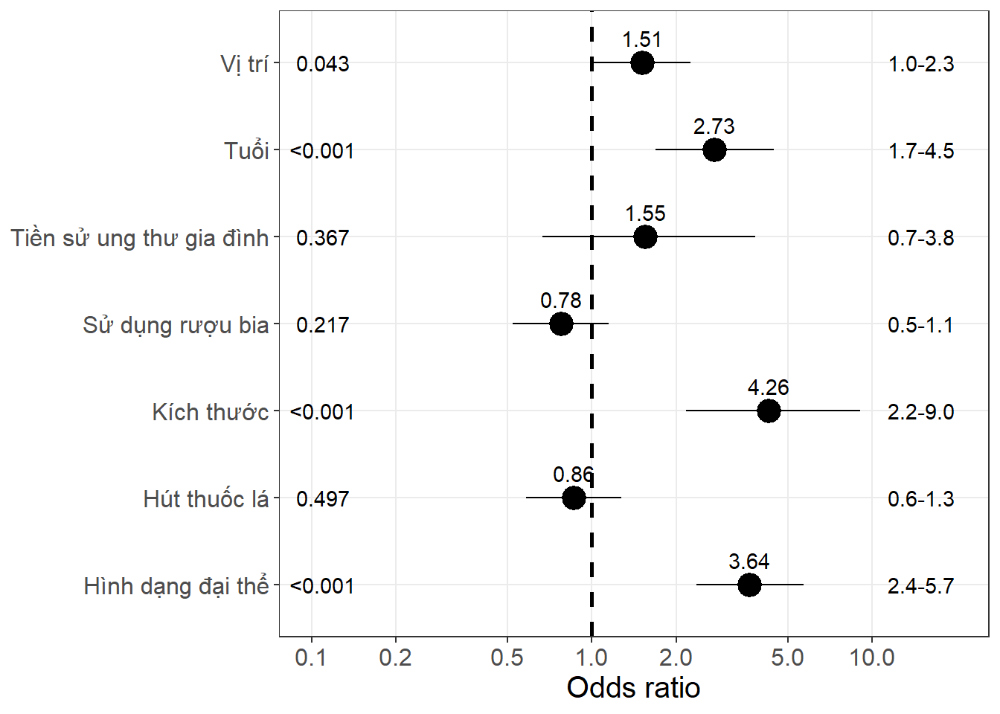
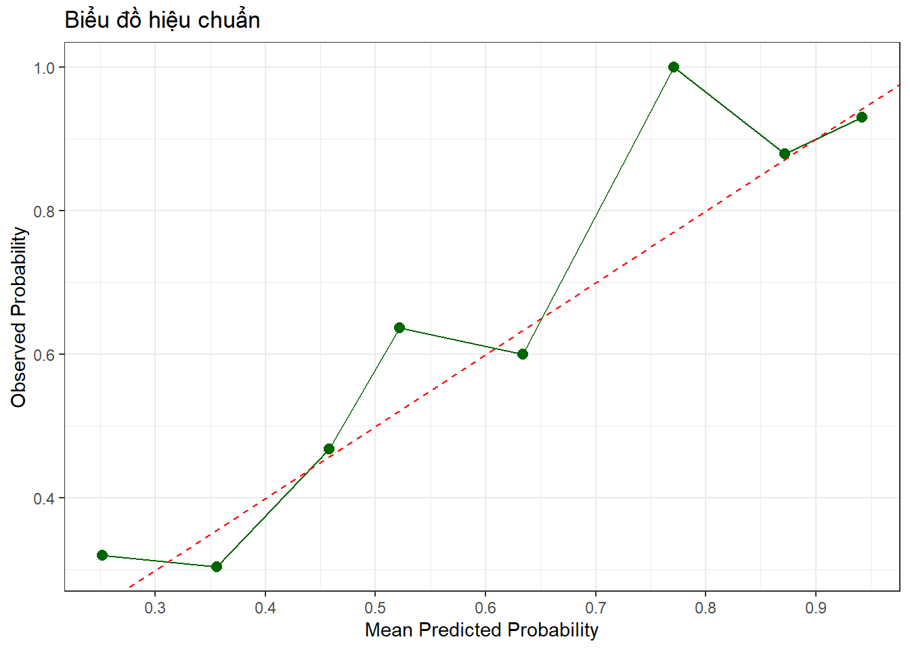
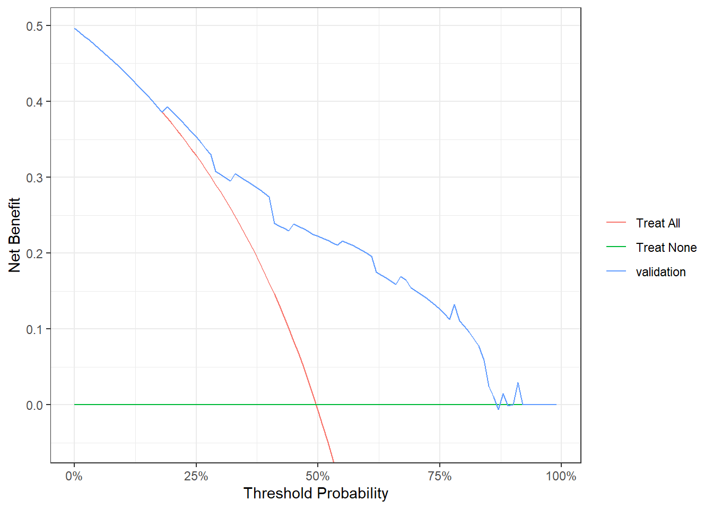
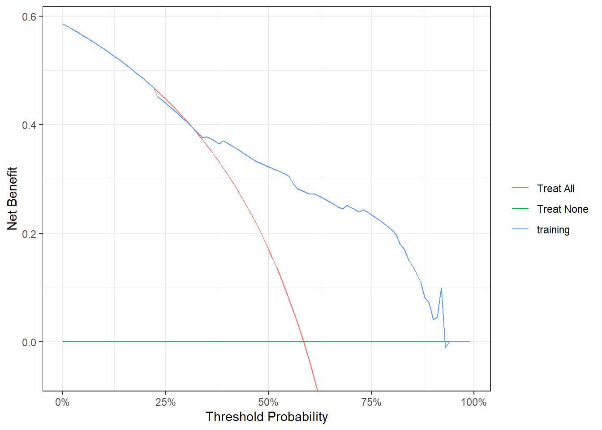

| Characteristic | Không tân sinh, N = 2001 | Tân sinh, N = 2521 | p-value2 |
|---|---|---|---|
| Age | 57.3 (14.2) | 61.2 (12.3) | 0.002 |
| Sex | 0.493 | ||
| Nữ | 120 (60.0%) | 142 (56.3%) | |
| Nam | 80 (40.0%) | 110 (43.7%) | |
| TSUTDT | 0.978 | ||
| Không | 182 (91.0%) | 228 (90.5%) | |
| Có | 18 (9.0%) | 24 (9.5%) | |
| TSPDT | 55 (27.5%) | 71 (28.2%) | 0.958 |
| TSGD | 0.367 | ||
| Không | 190 (95.0%) | 233 (92.5%) | |
| Có | 10 (5.0%) | 19 (7.5%) | |
| HTL | 0.497 | ||
| Không | 107 (53.5%) | 144 (57.1%) | |
| Có | 93 (46.5%) | 108 (42.9%) | |
| Ruou | 0.217 | ||
| Không | 109 (54.5%) | 153 (60.7%) | |
| Có | 91 (45.5%) | 99 (39.3%) | |
| BMI | 23.2 (2.8) | 23.3 (2.9) | 0.477 |
| kichthuoclon | <0.001 | ||
| <=5mm | 188 (94.0%) | 198 (78.6%) | |
| >5mm | 12 (6.0%) | 54 (21.4%) | |
| Paris | <0.001 | ||
| IIa | 157 (78.5%) | 126 (50.0%) | |
| Is+Ip | 43 (21.5%) | 126 (50.0%) | |
| rightcolon | 0.043 | ||
| Đại tràng trái | 130 (65.0%) | 139 (55.2%) | |
| Đại tràng phải | 70 (35.0%) | 113 (44.8%) | |
| NBI | <0.001 | ||
| Không tân sinh | 173 (86.5%) | 42 (16.7%) | |
| Tân sinh | 27 (13.5%) | 210 (83.3%) | |
| 1 Mean (SD); n (%) | |||
| 2 Welch Two Sample t-test; Pearson’s Chi-squared test | |||
Polyp 452
TABLE SUMMARY
ROC CURVES

SENS - SPEC - ACC
MODEL 1: WLE
threshold accuracy sensitivity specificity
threshold 0.6660779 0.7111111 0.4776119 0.9411765MODEL 2: 4 factors
threshold accuracy sensitivity specificity
threshold 0.6408403 0.6544118 0.5074627 0.7971014MODEL 3: WLE + 4 factors
threshold accuracy sensitivity specificity
threshold 0.5901999 0.7333333 0.5820896 0.8823529MODEL 4: NBI + 5 factors
threshold accuracy sensitivity specificity
threshold 0.6812954 0.8592593 0.8208955 0.8970588MODEL 5: NBI
threshold accuracy sensitivity specificity
threshold 0.5492401 0.8602941 0.8208955 0.8985507SUMMARY MODEL
Call:
glm(formula = nhompolyp ~ WLE + Tuoicao + Paris + kichthuoclon +
rightcolon, family = "binomial", data = train)
Deviance Residuals:
Min 1Q Median 3Q Max
-2.6656 -0.9431 0.3370 0.9807 1.6614
Coefficients:
Estimate Std. Error z value Pr(>|z|)
(Intercept) -1.0905 0.3163 -3.448 0.000566 ***
WLETân sinh 2.3580 0.3917 6.019 1.75e-09 ***
Tuoicao>=50 0.5108 0.3208 1.592 0.111296
ParisIs+Ip 0.6569 0.3182 2.065 0.038951 *
kichthuoclon>5mm 0.6835 0.5271 1.297 0.194741
rightcolonĐại tràng phải 0.4048 0.2724 1.486 0.137205
---
Signif. codes: 0 '***' 0.001 '**' 0.01 '*' 0.05 '.' 0.1 ' ' 1
(Dispersion parameter for binomial family taken to be 1)
Null deviance: 428.80 on 315 degrees of freedom
Residual deviance: 331.89 on 310 degrees of freedom
AIC: 343.89
Number of Fisher Scoring iterations: 5Điểm cut-off value của mô hình sử dụng
threshold sensitivity specificity npv ppv
threshold 0.5901999 0.5820896 0.8823529 0.6818182 0.8297872Điểm C-index của mô hình sử dụng
Call:
concordance.lm(object = mod3)
n= 316
Concordance= 0.7941 se= 0.02481
concordant discordant tied.x tied.y tied.xy
18253 3996 1986 22792 2743 RISK SCORE
(Intercept) WLETân sinh Tuoicao>=50
-3 6 1
ParisIs+Ip kichthuoclon>5mm rightcolonĐại tràng phải
2 2 1 [1] "Điểm 0 thì có nguy cơ p = 0.252"
[1] "Điểm 1 thì có nguy cơ p = 0.335"
[1] "Điểm 2 thì có nguy cơ p = 0.430"
[1] "Điểm 3 thì có nguy cơ p = 0.531"
[1] "Điểm 4 thì có nguy cơ p = 0.629"
[1] "Điểm 5 thì có nguy cơ p = 0.718"
[1] "Điểm 6 thì có nguy cơ p = 0.792"
[1] "Điểm 7 thì có nguy cơ p = 0.851"
[1] "Điểm 8 thì có nguy cơ p = 0.895"
[1] "Điểm 9 thì có nguy cơ p = 0.928"
[1] "Điểm 10 thì có nguy cơ p = 0.951"
[1] "Điểm 11 thì có nguy cơ p = 0.967"
[1] "Điểm 12 thì có nguy cơ p = 0.977"
[1] "Điểm 13 thì có nguy cơ p = 0.985"
[1] "Điểm 14 thì có nguy cơ p = 0.990"
[1] "Điểm 15 thì có nguy cơ p = 0.993"
[1] "Điểm 16 thì có nguy cơ p = 0.995"
[1] "Điểm 17 thì có nguy cơ p = 0.997"NOMOGRAM
nhompolyp WLE Tuoicao
"Polyp Type" "Dự đoán trên NSAST" "Tuổi"
Paris kichthuoclon rightcolon
"Hình dạng đại thể" "Kích thước" "Vị trí" 
OR PLOT

CALIBRATION PLOT

DECISION CURVE ANALYSIS
plot(dcurve)
plot(dcurve1)
